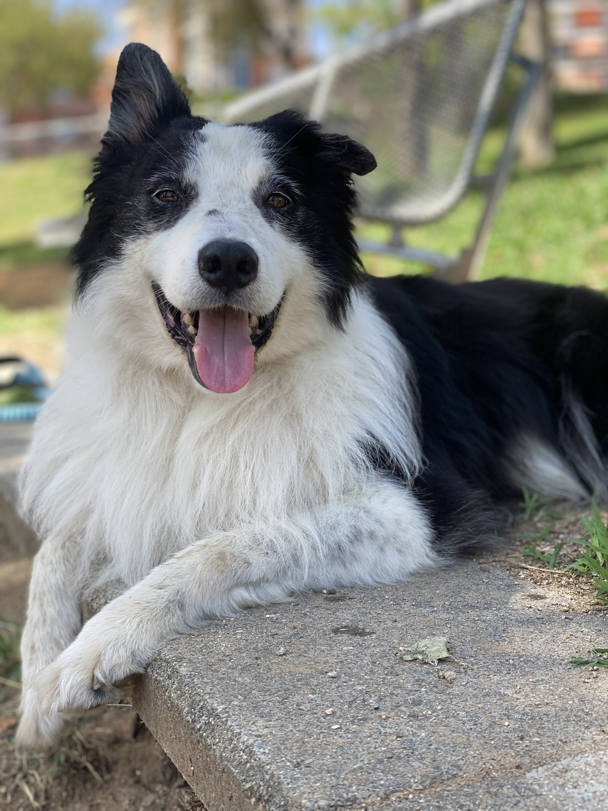
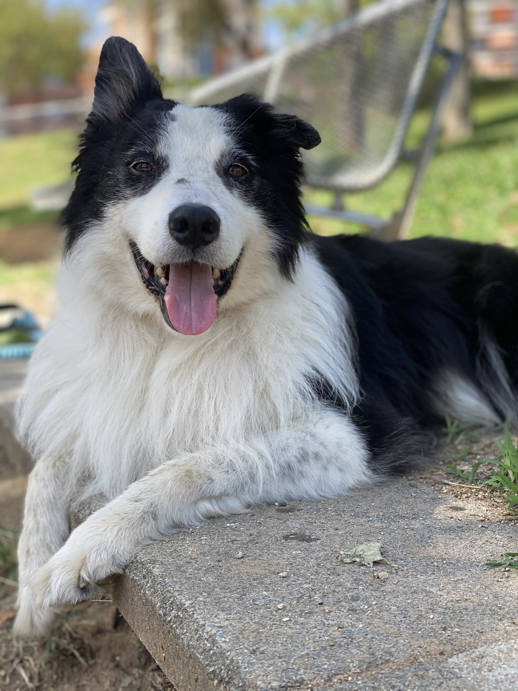

Galería de Imágenes con Efecto Hover


 

¿Qué aprendimos en este ejercicio?
En este ejercicio creamos una galería de imágenes usando flexbox para distribuirlas horizontalmente y lograr que se adapten al espacio disponible.
Además, aplicamos un efecto visual muy chulo al pasar el cursor sobre cada imagen: las imágenes aumentan su tamaño, cambian de opacidad y brillo, y se les añade una sombra para destacar mejor la que el usuario está mirando. Esto mejora la experiencia visual y hace la galería más dinámica e interactiva.
También aprendimos a usar transiciones CSS para que el cambio de estilos sea suave y agradable.